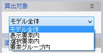
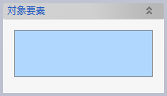
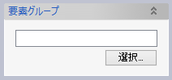
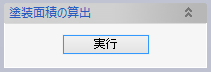
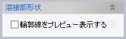
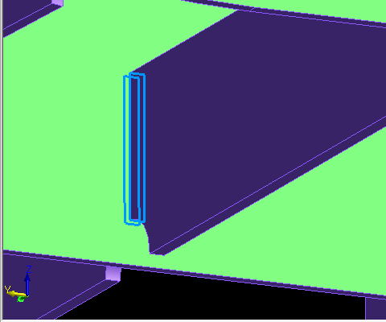
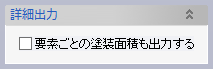
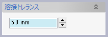

ソリッドまたはシート要素間の溶接部を検出し、その面積を要素表面積合計から引いたものを、塗装面積として表示します。
ソリッドまたはシート要素を選択してコマンドを実行すると、塗装面積（要素の表面積から要素間の溶接部面積を引いたもの）が表示されます。 要素ごとの塗装面積を表示したり、溶接部の外形をプレビュー表示したりすることもできます。

塗装面積を算出する対象要素を選択します。シート要素については表裏両面を塗装するものとみなし、2倍の面積として計算されます。
モデルに含まれる全てのソリッドおよびシート要素を対象とします。
モデルに含まれるソリッドおよびシート要素のうち、表示がOnになっている要素を対象とします。
対象となるソリッドおよびシート要素を選択します。

選択した要素グループに含まれる全てのソリッドおよびシート要素を対象とします。


塗装面積を情報ウィンドウに表示します。

チェックした状態で塗装面積を算出すると、ドキュメントウィンドウ内に溶接部の輪郭線をプレビュー表示します。


チェックした状態で塗装面積を算出すると、合計の塗装面積だけでなく、要素ごとに
も情報ウィンドウに出力します。

モデル内で要素同士が離れていたり食い込んでいたりしても、フェイス間の距離が溶接トレランス値以下であれば溶接部分とみなされます。